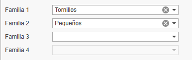
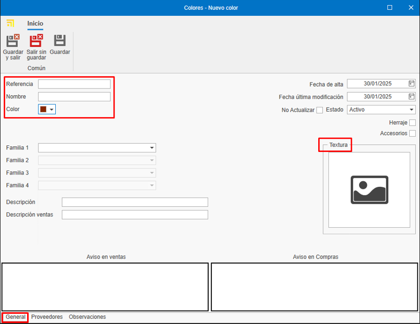
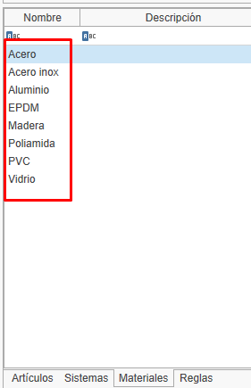
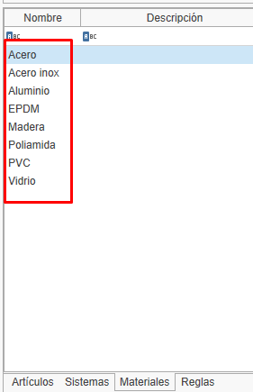
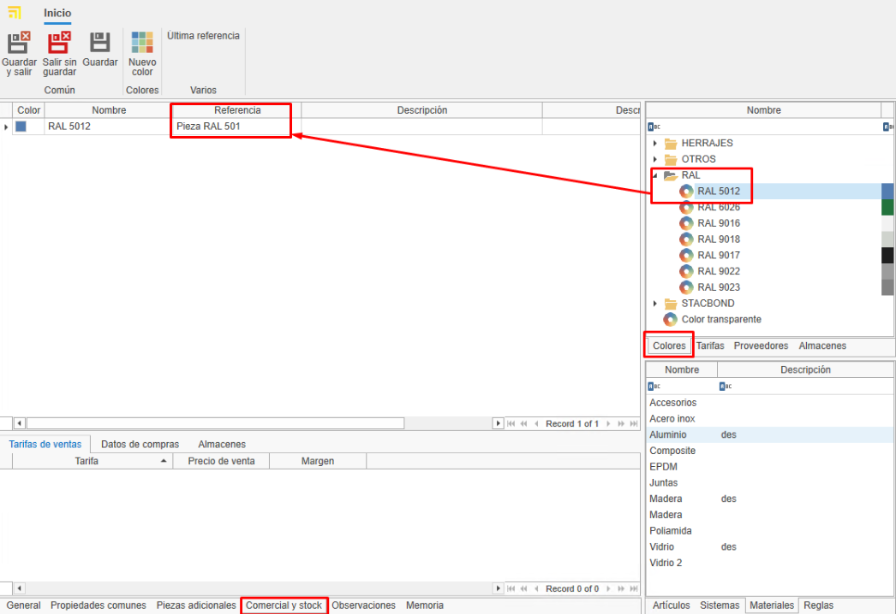
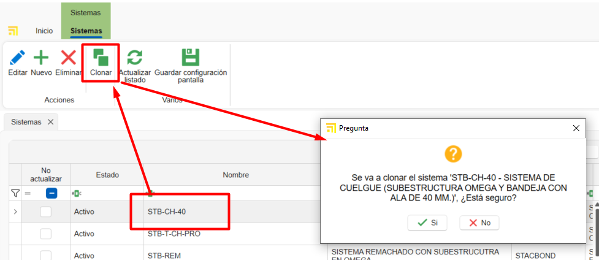
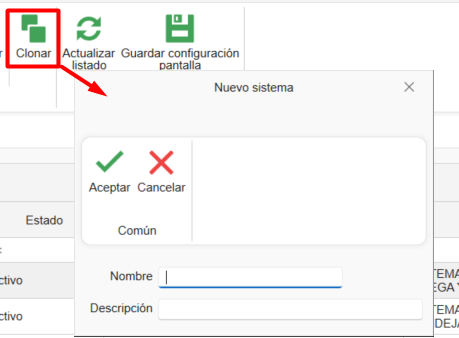
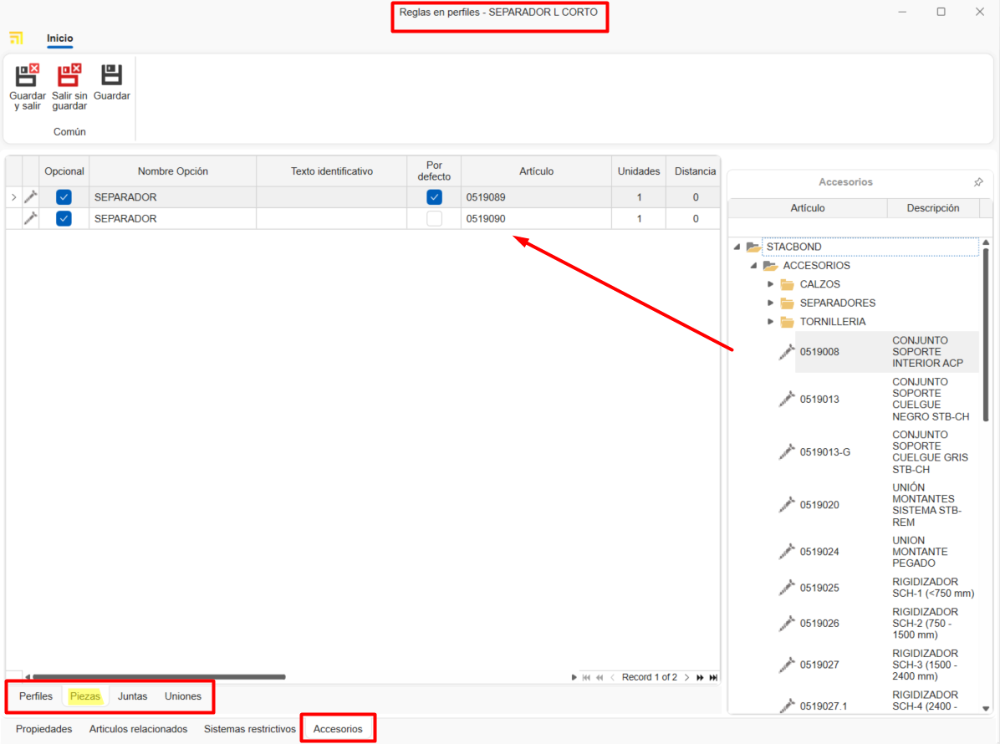

Creación de materiales propios en enMATERIALS
1. Introducción
Este manual tiene como objetivo guiar al usuario en el proceso de alta y gestión de materiales propios en enMATERIALS. Asegúrate de seguir las instrucciones detalladas para garantizar una correcta definición y organización de los materiales.
2. Definición de materiales
Los materiales pueden clasificarse en diferentes tipos según sus propiedades y características. A continuación, se describen los principales tipos:
2.1. Tipos de materiales
- Piezas: Se calculan por unidad y son los materiales más comunes y sencillos de definir.
- Barras: Se calculan por metro lineal y requieren información adicional, como longitud.
- Superficies: Se calculan por metro cuadrado y pueden incluir características adicionales.
- Juntas: Se calculan por metro lineal y tienen especificaciones especiales para su aplicación.
2.2. Artículos y colores
Los materiales se definen dentro de la sección "Artículos", mientras que los acabados se gestionan en "Colores" y la materia prima en "Materiales".

3. Creación de materiales
Para dar de alta un material, sigue estos pasos:
3.1. Definir un artículo
- Accede a la sección de "Artículos".


- Desde la pestaña General Asigna una referencia, un tipo de cálculo y un material.

- Organiza los artículos por niveles utilizando los campos "Familia1", "Familia2", etc.

- Completa la descripción de compra (para proveedores) y la de venta (para clientes).

- Asigna un material base arrastrando un material desde el árbol de materiales en la cinta derecha.

- Añade imágenes al material. Asegúrate de optimizar las imágenes para evitar lentitud en la base de datos.

-
En el apartado de Información de almacén índico para ese artículo algunos campos como:
-
Almacén principal: Define el almacén donde se ubicará el artículo por defecto en el sistema.
- Ubicación: Especifica la localización física exacta dentro del almacén (estantería, pasillo, nivel, etc.).
- Montado en destino: Al marcar esta casilla, el artículo se configurará para montaje en destino por defecto. Estos materiales aparecerán en el puesto de Picking de enCONTROL.
-
Control de stock: Al activar esta opción, el artículo se incluirá en el apartado de reposición de stock para seguimiento de inventario.

ℹ️ Nota: El apartado "General" del artículo es igual para todos los tipos de cálculo.
3.2. Creación de colores
- Accede a la sección de "Colores".


- Asigna una referencia, nombre y un color o textura.

- Asigna un proveedor desde la pestaña "Proveedor" arrastrando el proveedor desde la ventana derecha.

3.3. Creación de un material Base
- Accede a la sección de "Materiales".


- Indica el nombre, color y marca el check "Material" para que aparezca como materia prima.

ℹ️ Nota: Para generar automáticamente la carta RAL de colores y material base, selecciona el botón Esenciales en la barra de "Inicio".

 

4. Gestión de proveedores
Antes de dar de alta un material, verifica si el proveedor ya está registrado en ENBLAU en la sección "Compras > Proveedores". Si no está registrado, créalo siguiendo los estándares definidos.

5. Comercial y stock
Una vez definido el material, completa su información en las secciones de comercial y stock.
5.1. Datos de compra y proveedores
Asigna proveedores, unidades y precios de compra según cada color del material.

ℹ️ Nota: Puedes añadir una referencia de proveedor si es distinta de la registrada en la base de datos.
5.2. Asignación de referencias
Cada color y material tendrá una referencia única (Referencia Artículo + Referencia Color). Arrastra uno o más colores desde la pestaña de colores en la ventana derecha.

6. Tipología de materiales y datos adicionales
6.1. Piezas
- Materiales individuales gestionados por unidad (accesorios, tornillos, etc.).
- Se valoran por unidad.
- En la pestaña "Propiedades Comunes", puedes añadir campos adicionales si es necesario.

6.2. Barras
- Materiales definidos por longitud y otros atributos técnicos.
- Se valoran por metro lineal.
- En la pestaña "Propiedades Comunes", indica la longitud de la barra (obligatorio).

- Para perfiles, añade información adicional como distancia de seguridad y retal mínimo/máximo. Ese tipo de información son opcionales.

ℹ️ Nota: Los apartados como Tipología, Rol, Datos Técnicos, Descuentos y Reglas no son necesarios para creación de materiales propios, ya que son información relevante únicamente para los materiales dibujados.
6.3. Superficies
- Materiales definidos por metro cuadrado (vidrios, chapas, etc.).
- Se valora por M2.
- En la pestaña "Propiedades Comunes", indica el alto y ancho de la superficie.

- En la pestaña "Valoración y datos técnicos", indica algunos datos dependiendo del tipo de la superficie y su necesidad. Por ejemplo: Espesor, tipo de superficie, precios por M2 (marcar el check "M2 por proveedor" si el precio se calcula por proveedor), etc.

6.4. Juntas
- Materiales definidos por metro lineal.
- Se valora por metro lineal.
- En la pestaña "Propiedades Comunes", se puede indicar la longitud si lo ves necesario.

7. Estándares a seguir
Para garantizar una correcta gestión, sigue estos estándares:
- Usa mayúsculas en nombres y referencias.
- Verifica la existencia de proveedores y materiales antes de darlos de alta.
- Mantén un formato uniforme en referencias de materiales y colores.
- Guardar siempre los cambio.
8. Creación de documentos de compra ENBLAU
Para comprobar si el artículo está dado de alta abrir ENBLAU y crear un documento de compra:
- Crea un pedido de compra y selecciona el proveedor.
- En el pedido de compra busca y agrega el material desde la ventana derecha. Arrastra y selecciona el color asociado.

- Válida el precio asignado al proveedor.

- Si el material tiene más de un proveedor asignado, puedes seleccionar el proveedor deseado con un doble clic sobre el proveedor.
9. Creación de sistemas y materiales enCLAD
Creación de sistemas y materiales para fachadas ventiladas en enCLAD.
9.1. Sistemas
Desde la ventana de inicio, en la barra superior, acceder a Sistema.

- Para crear un nuevo sistema, seleccionar Nuevo en la barra superior.

9.1.2. Propiedades
Desde la pestaña Propiedades, situada en la parte inferior, se definen los siguientes campos del sistema:
- Nombre
- Descripción
- Proveedor
- Familia 1 y 2 (organización por niveles)
- Imagen
- Estado: Activo, Deshabilitado temporalmente o Descatalogado.
- Tipología del sistema
En este caso, marcar la casilla Fachada ventilada.

Desde la pestaña Artículos relacionados, en la parte inferior, se muestra el listado de materiales vinculados al sistema.

9.1.3. Fachada ventilada
Desde la pestaña Tipo de sistema, en la parte superior, se mostrará una ventana donde se puede seleccionar el tipo de sistema:
- Sistema de cuelgue
- Sistema macho-hembra
- Sistema pegado
- Sistema remachado
En la ventana lateral izquierda se definen los parámetros específicos del tipo de sistema.
En la ventana inferior se definen otros parámetros comunes entre los distintos tipos de sistema, como:
- Distancia extremo habitual
- Huella mínima – Vertical
- Huella máxima – Vertical
- Huella habitual – Vertical
- Huella mínima – Horizontal
- Huella máxima – Horizontal
- Huella habitual – Horizontal
- Recercado mínimo
- Recercado máximo
- Recercado habitual
- Permitir recercado (casilla)
En la ventana central se muestra el diseño de la fachada ventilada correspondiente al tipo de sistema seleccionado.
Si el tipo de sistema es Sistema de cuelgue, se habilita una ventana adicional para la definición del diseño del mecanizado:
- Pestaña Mecanizado cuelgue
Permite importar el dibujo en formato.dwg/.dxf. - Pestaña Otros mecanizados
Permite definir el mecanizado mediante parámetros.
En la ventana lateral derecha, Materiales del sistema, se añaden los artículos correspondientes al sistema mediante campos desplegables:
- Coliso
- Remache conformado
- Soporte de cuelgue
- Pletina conformada
- Refuerzo bota

ℹ️ Nota: Dependiendo del tipo de sistema seleccionado, se habilitarán unos parámetros u otros.
Desde la pestaña Opciones, en la parte inferior, se mostrará una ventana con las opciones de rincón disponibles dependiendo del tipo de sistema.

Desde la pestaña Remates, en la parte inferior, se mostrará una ventana donde definir:
Opciones de remate: Definir las opciones de remate para el sistema en el despliegue de opción.
- Coronación
- Remate inferior
- Cierre de cámara
- Ventana dintel
- Ventana vierteaguas
- Ventana jamba
Valores: Definir los valores para cada opción seleccionada.
Pliegues: Definir la longitud y rotación de los pliegues para cada valor seleccionado.

Desde la pestaña Rigidizadores (solo disponible para sistemas de tipo cuelgue), se muestra el listado de materiales de tipo rigidizador vinculados al sistema.

9.1.4. Clonar sistemas
Desde Sistemas, en la cinta superior, está disponible la opción Clonar.
Esta funcionalidad copia todas las propiedades del sistema seleccionado en la lista.


9.2. Definición artículos enCLAD
Definir artículos desde el módulo de artículos:
Crear un nuevo artículo:
1. General
Rellenar los campos de información general según el tipo de cálculo seleccionado:
- Barra
- Pieza
- Junta
- Superficie

ℹ️ Nota: Es obligatorio indicar el sistema de fachada ventilada al que estará vinculado el material.
2. Propiedades comunes
Rellenar los campos de propiedades comunes.
Dependiendo del tipo de cálculo del material, aparecerán unos campos u otros.
Ejemplos:
- Barra

- Pieza separadora

3. Rol
Marcar el tipo de rol del perfil (solo para artículos de tipo barra) y definir su valor en el apartado de fachada ventilada.

4. Datos técnicos
Importar el archivo .dwg/.dxf del material y definir las dimensiones del dibujo, como:
- Dimensiones interiores
- Dimensiones exteriores
- Profundidad
- Punto de inserción
- Otros parámetros

ℹ️ Nota: La pestaña Datos técnicos solo está disponible para los tipos de cálculo barra y junta.
5. Reglas
Asignar una regla al perfil (solo para barras), arrastrando una regla previamente definida desde la ventana lateral derecha inferior, de la pestaña Reglas.

6. Comercial y stock (asignar colores)
Cada color y material tendrá una referencia única (Referencia Artículo + Referencia Color). Arrastra uno o más colores desde la pestaña de colores en la ventana derecha, de la pestaña Comercial y stock.
ℹ️ Nota: Información sobre como crear nuevos colores ir a 3.2. Creación de colores.
9.3. Definición de reglas
Desde el apartado de inicio, acceder al listado Reglas de adición de artículos y seleccionar Reglas en perfiles.

Crear una Nueva regla en perfiles.
1. Propiedades
Rellenar los campos de propiedades de la regla:
- Nombre
- Descripción
- Familias (niveles de carpetas)

2. Artículos relacionados
Relacionar los artículos de tipo barra arrastrándolos desde la ventana lateral derecha en Artículos.

3. Sistemas restrictivos
Indicar los sistemas a restringir para esa regla, arrastrándolos desde la ventana lateral derecha en Sistemas.

4. Accesorios
Indicar la opción y/o el artículo que se va a generar, arrastrándolo desde la ventana lateral derecha en Accesorios.

ℹ️ Nota: Se puede definir una configuración distinta para cada tipo de cálculo desde la pestaña correspondiente en la parte inferior de la ventana.
10. Conclusión
Siguiendo este manual, podrás dar de alta y gestionar materiales de manera eficiente en el sistema, asegurando una correcta organización y optimización de los procesos de compra y venta.
 Español
Español
 English
English
 Italiano
Italiano
 Português
Português